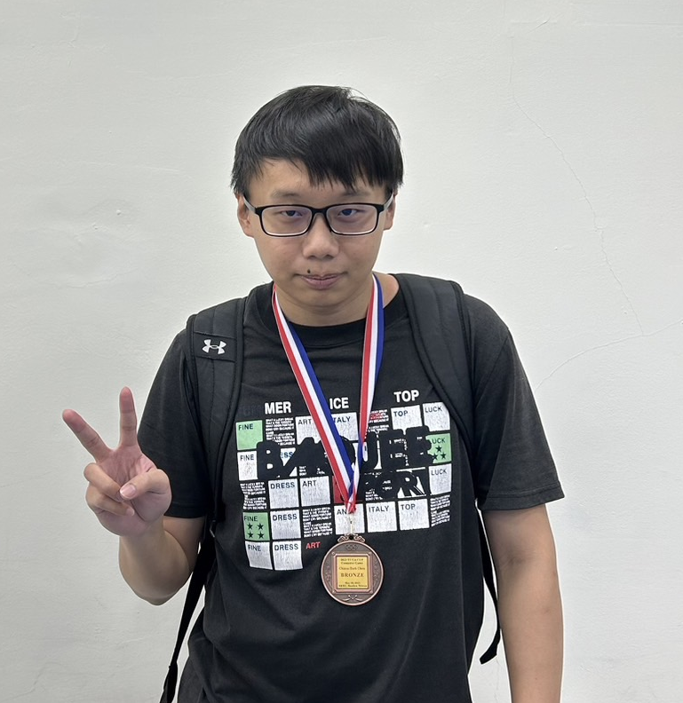

2023TCGA
2023年5月18至19在東華大學舉辦2023TCGA，TCGA為台灣電腦對局協會所舉辦的比賽，讓有在進行電腦對局研究的教授、學生能夠同場較勁， 當時和專題組員郁勛、信甫一同前往參加暗棋組的比賽。
在現場遇到了許多強敵，有交大、中研院等高手存在，在經過一系列緊張刺激的對局後，最終，我們成功獲得了第三名的好成績。 在比賽的過程中也看見我們不足的地方，還有很大的進步空間，也與前兩名的同學進行了交流，最後感謝教授以及隊友的幫助
2023年5月18至19在東華大學舉辦2023TCGA，TCGA為台灣電腦對局協會所舉辦的比賽，讓有在進行電腦對局研究的教授、學生能夠同場較勁， 當時和專題組員郁勛、信甫一同前往參加暗棋組的比賽。
在現場遇到了許多強敵，有交大、中研院等高手存在，在經過一系列緊張刺激的對局後，最終，我們成功獲得了第三名的好成績。 在比賽的過程中也看見我們不足的地方，還有很大的進步空間，也與前兩名的同學進行了交流，最後感謝教授以及隊友的幫助